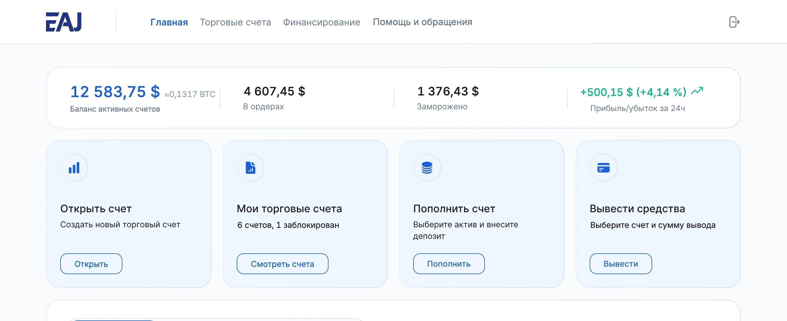
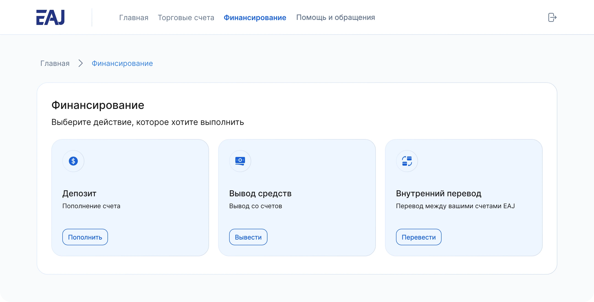
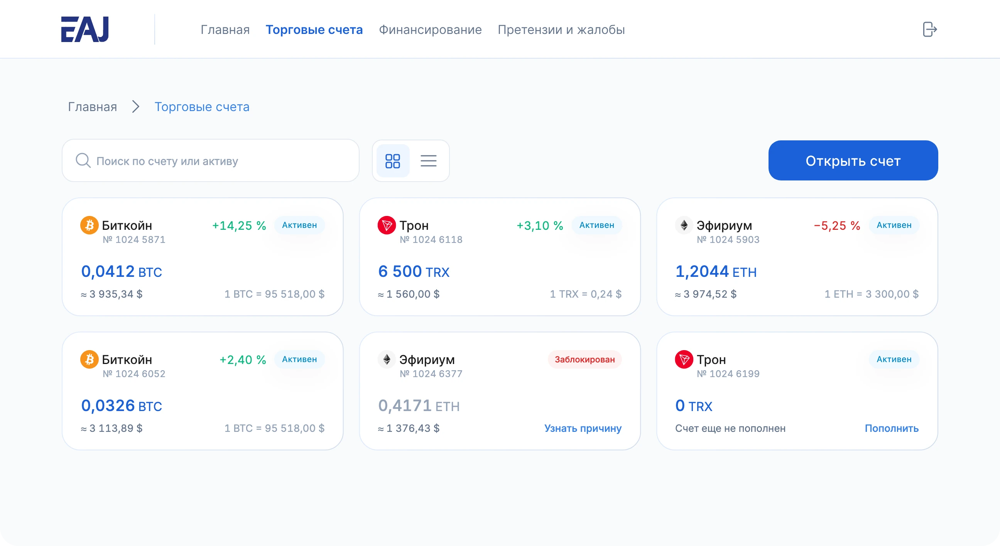
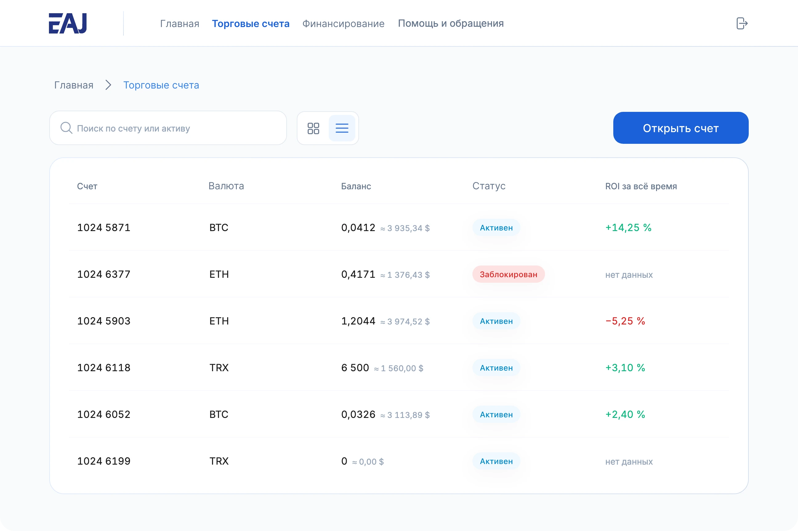
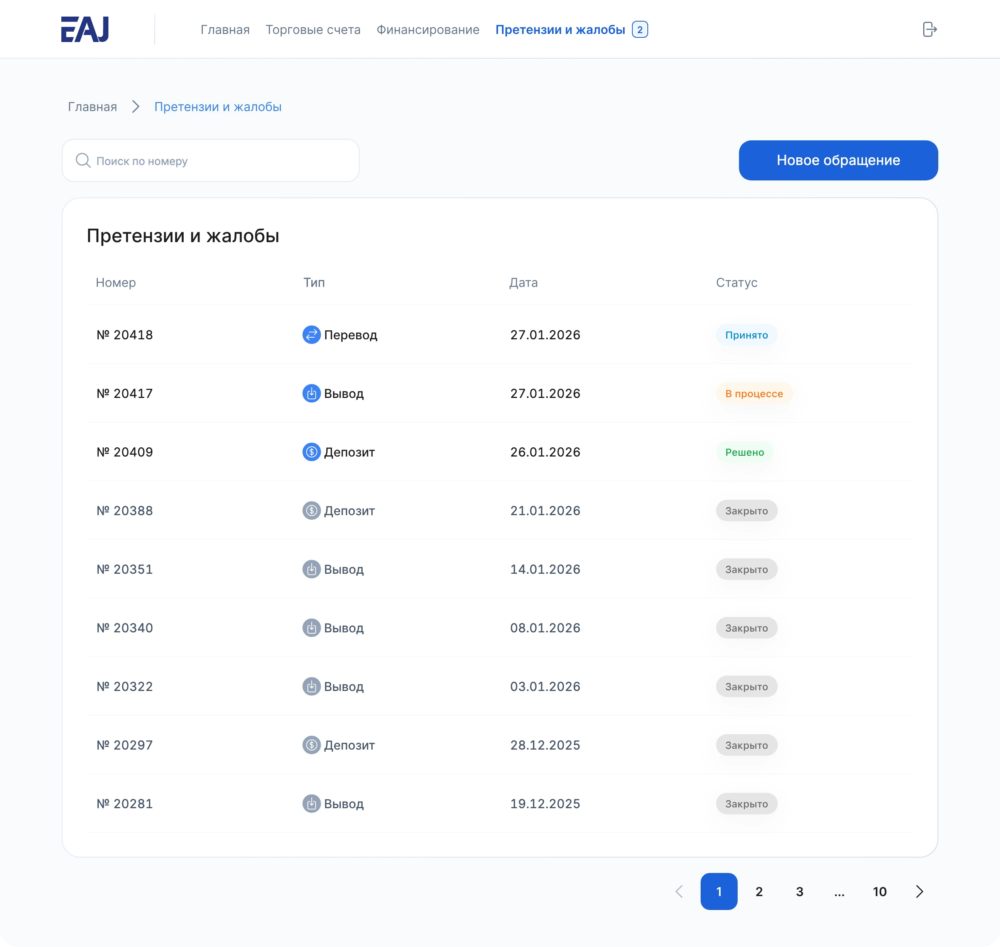
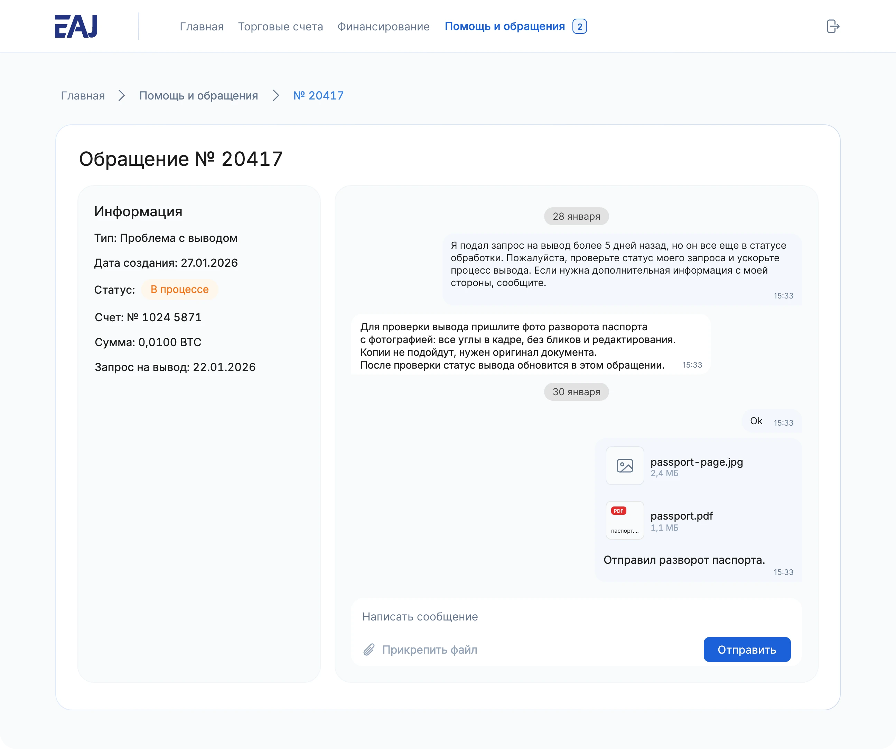

Капитал и входы в операции на одном экранеCapital and entry points on one screen
Рис. 1. Главная: капитал и входы в операции на одном экране. Нажмите на скриншот, чтобы увеличить. Данные примера.Fig. 1. Home: capital and entry points to operations on one screen. Tap a screenshot to zoom. Example data.КонтекстContext
Брокер без кабинетаBroker without account
EAJ Trader: новый брокер Fibo Group, и ему нужен личный кабинет. В нём клиент открывает и пополняет торговый счёт, а между сделками в терминале управляет своими деньгами.EAJ Trader is a new broker by Fibo Group, and it needed a client account area. That is where clients open and fund a trading account and manage their money between trades in the terminal.
КлиентClientузнаёт о брокереlearns about the broker
регистрацияsign‑up
СайтWebsiteсделала раньшеdesigned earlier
входsign‑in
КабинетAccountоткрыть и пополнить счётopen and fund an account
Этот кейсThis case
счёт пополненaccount funded
ТерминалTerminalпервая сделкаfirst trade
Рис. 2. Где стоит кабинет: между регистрацией на сайте и первой сделкой в терминале клиент открывает и пополняет счёт.Fig. 2. Where the account sits: between sign‑up on the website and the first trade in the terminal, the client opens and funds an account.
ИсследованиеResearch
Заказчик пришёл с готовой сегментацией трейдеров и сайтом, который я сделала раньше. Я начала с сегментации, чтобы понять, кому кабинет нужен первым, а затем сравнила, как устроен вход у брокеров‑конкурентов.The client came with a ready trader segmentation and the website I had designed earlier. I started with the segmentation to see who needs the account area first, then compared how competitors handle the way in.
Сегментация заказчикаClient segmentation
Пять типов трейдеров. Я разделила их по тому, где решается их главная задача: в кабинете, в терминале или в следующих версиях.Five trader types. I sorted them by where their main job gets done: in the account area, in the terminal or in later versions.
Активный трейдерActive traderОсновной пользователь платформы: быстрый вход и контроль капиталаThe platform’s core user: a fast way in and control of capitalMVPMVP
СкальперScalperСделки в один клик без задержекOne‑click trades with no delayТерминалTerminal
Инвестор‑трейдерInvestor‑traderПортфель и метрики рискаPortfolio and risk metricsПозжеLater
НовичокBeginnerОбучение и подсказкиLearning and hintsПозжеLater
Бенчмарк конкурентовCompetitor benchmark
Сколько шагов от регистрации до торговли у четырёх брокеров и с какой суммы можно пополнить.How many steps it takes four brokers to get from sign‑up to trading, and the minimum deposit.
БрокерBrokerШаги до торговлиSteps to tradingДепозит отDeposit from
У eToro 21 шаг для реального счёта, минимум зависит от страны. По обзорам BestBrokers, 2026.eToro takes 21 steps for a live account, and the minimum depends on the country. Based on BestBrokers reviews, 2026.
ВыводConclusion
Первую версию строим для активного трейдера: ему нужны быстрый вход и контроль капитала. Остальные сегменты решают задачи в терминале или позже.The first version is for the active trader, who needs a fast way in and control of capital. Other segments get their jobs done in the terminal or later.
Найденная проблемаThe problem we found
Путь до первой сделки у брокеров длинный: от 10 до 21 шага, а пополнить обычно можно только после проверки документов. Новый брокер без истории теряет на нём клиентов ещё до торговли.The path to a first trade is long at every broker: 10 to 21 steps, and a deposit usually waits for the document check. A new broker with no track record loses clients on it before they trade.
Отсюда гипотезаHence the hypothesis
Если сократить вход: открыть счёт в несколько шагов прямо в кабинете и пополнить его до проверки документов, то больше новых клиентов дойдут до первой сделки и останутся у нас.If we shorten the entry, so an account opens in a few steps right in the account area and can be funded before the document check, more new clients will reach a first trade and stay with us.
МадинаMadina
Как поймём, что сработало: растёт доля новых клиентов с первой сделкой за 7 дней. Первым сигнал даст первое подтверждённое пополнение.How we’ll know it worked: the share of new clients with a first trade within 7 days grows. The first confirmed deposit gives the earliest signal.
МетрикиMetrics
Дерево метрикMetric tree
Кабинет отвечает за путь от регистрации до пополненного счёта, дальше клиент торгует в терминале.The account area covers the path from sign‑up to a funded account; then the client trades in the terminal.
БизнесBusinessКлиенты, дошедшие до первой сделкиClients who reached a first trade
NSMОсновная метрикаMain metric
Конверсия новых клиентов в первое успешное пополнениеConversion of new clients to a first successful deposit
МадинаMadina
Считаю клиентов с подтверждённым зачислением к клиентам, впервые вошедшим в кабинет.I count clients with a confirmed deposit against clients who signed in for the first time.
Шаг 1: доля открывших счёт среди впервые вошедшихStep 1: share who opened an account among first sign‑ins
Шаг 2: доля начавших пополнение среди открывших счётStep 2: share who started a deposit among those with an account
Шаг 3: доля подтверждённых зачислений среди начавших пополнениеStep 3: share of confirmed deposits among started deposits
Качество путиPath quality
Выбор счёта: правильный выбор, ошибки, выполнение задачиAccount choice: correct picks, errors, task completion
Ограничители: ошибки пополнения, обращения из‑за непонятного статусаGuardrails: deposit errors, requests about an unclear status
Рис. 3. Дерево метрик: NSM (North Star Metric) и путь от первого входа до зачисления.Fig. 3. The metric tree: the NSM (North Star Metric) and the path from first login to a confirmed deposit.РешенияDecisions
Решения MVPMVP decisions
Приоритет MVP задавала по тому, насколько функция сокращает путь активного трейдера до первой сделки.I set MVP priority by how much a feature shortens the active trader’s path to a first trade.
МадинаMadina
Аналитику портфеля и обучение отложили сознательно: они нужны свинг‑трейдерам, инвесторам и новичкам, а не первому сегменту.Portfolio analytics and learning were postponed on purpose: swing traders, investors and beginners need them, not the first segment.
1Короткий входShort entryбез него клиент уходит до первой сделкиwithout it clients leave before a first trade
2Главный экранHome screenактивный трейдер приходит следить за капиталомthe active trader comes to watch capital
3Карточки счетовAccount cardsошибка счёта стоит трейдеру денегa wrong account costs the trader money
4ОбращенияRequestsпополнение до проверки рождает вопросы о документахdepositing before the check raises document questions
Решение 01Decision 01
Короткий входShort entry
Заметили в исследованииSpotted in researchу конкурентов от 10 до 21 шага, а пополнение ждёт проверки документов.competitors take 10 to 21 steps, and deposits wait for the document check.
Как решили. Сократили онбординг и путь до первой сделки: счёт открывается в два шага прямо в кабинете, а пополнить можно сразу, документы нужны только от $1000. Пополнение, вывод и перевод собраны в одном разделе.How we solved it. We shortened onboarding and the path to a first trade: an account opens in two steps right in the account area, and a deposit is possible at once; documents are needed only from $1,000. Deposits, withdrawals and transfers live in one section.
МадинаMadina
Проверку документов перенесли на суммы от $1000, поэтому путь до сделки короче, чем у любого из четырёх брокеров.We moved the document check to amounts from $1,000, so the path to a trade is shorter than at any of the four brokers.
Разбор путиPath breakdown
У конкурентовCompetitors
РегистрацияSign‑up
Проверка документовDocument check
ПополнениеDeposit
Первая сделкаFirst trade
В MVPIn the MVP
РегистрацияSign‑up
Счёт в кабинетеAccount in the area
Пополнение сразуDeposit at once
Первая сделкаFirst trade
Брокер зарабатывает, когда клиент торгует, поэтому каждый, кто ушёл на проверке документов, это потерянная выручка. Проверку мы перенесли туда, где она нужна: на суммы от $1000.A broker earns when clients trade, so everyone who drops at the document check is lost revenue. We moved the check to where it’s needed: amounts from $1,000.
Решение 02Decision 02
Главный экранHome screen
Заметили в исследованииSpotted in researchу конкурентов аналитика и точки входа разнесены по разным разделам, и контролировать капитал тяжело.competitors split analytics and entry points across separate sections, which makes capital hard to control.
Как решили. Главный экран сделали точкой входа с доступными действиями и аналитикой капитала, потому что активный трейдер приходит следить за капиталом и сразу действовать.How we solved it. We made home the entry point with available actions and capital analytics, because the active trader comes to watch capital and act right away.
Решение 03Decision 03
Карточки счетовAccount cards
Заметили в исследованииSpotted in researchв сценарном разборе счета одного актива было не различить. Неправильно выбранный счёт может стоить клиенту денег, а нам клиента.in the scenario review, accounts in one asset looked the same. A wrong account can cost the client money, and cost us the client.
Как решили. Разделили счета карточками: актив, номер, сумма в долларах и статус видны сразу, поэтому ошибиться счётом сложнее. Таблица осталась вторым видом.How we solved it. We split accounts into cards: the asset, number, USD value and status are visible at once, so picking the wrong account is harder. The table stays as a second view.
МадинаMadina
Рассматривала вариант A: таблицу с номером, валютой, суммой, статусом и ROI. Она компактна, когда счетов много, но счета одного актива в ней сливаются. Поэтому таблица осталась вторым видом.I also considered option A: a table with number, currency, amount, status and ROI. It is compact with many accounts, but accounts in one asset blur together, so the table stays as a second view.
Решение 04Decision 04
ОбращенияRequests
Заметили в исследованииSpotted in researchв MVP вопросов о проверках и блокировках будет много, а в сценарном разборе блокировку счёта не было видно.an MVP will get many questions about checks and blocks, and in the scenario review an account block wasn’t visible.
Как решили. Добавили обращения и поддержку прямо в кабинет, чтобы показать клиенту, что мы рядом: проблема фиксируется и решается на месте, без звонка в колл‑центр.How we solved it. We put requests and support right in the account area to show clients we are close by: an issue is logged and solved on the spot, without calling a call centre.
Нажмите на секцию, чтобы приблизитьClick a section to zoom in
100%
Ctrl или ⌘ + колесо: масштаб · перетаскивайте: сдвигCtrl or ⌘ + wheel to zoom · drag to panДва пальца: масштаб · один: сдвигTwo fingers to zoom · one to pan
1
Сценарий 1Flow 1ГлавнаяHome
Сверху баланс активных счетов и прибыль за 24 часа.At the top: active balance and 24‑hour profit.
2
Сценарий 2Flow 2Верх главнойTop of home

→ 1
ФинансированиеFunding

Четыре входа: открыть счёт, мои торговые счета, пополнить, вывести.Four entry points: open an account, my trading accounts, deposit, withdraw.
Пополнение, вывод и внутренний перевод в одном разделе, каждая кнопка называет своё действие.Deposit, withdrawal and internal transfer in one section, each button names its action.
1
3
Сценарий 3Flow 3Карточки счетовAccount cards

→ 2
ТаблицаTable

Актив, баланс, доходность и статус собраны вокруг одного счёта. Добавлены номер и сумма в долларах.The asset, balance, return and status are grouped around one account. The number and USD value are added.
Те же счета в таблице: второе представление за переключателем у поиска.The same accounts in a table: a second view behind a switch next to search.
2
4
Сценарий 4Flow 4Список обращенийRequest list

ОбращениеRequest

Клиент создаёт обращение, видит статусы и открывает переписку.The client creates a request, sees statuses and opens the conversation.
В обращении видны счёт, сумма и дата запроса, а поддержка называет нужный документ.The request shows the account, amount and request date, and support names the document it needs.
▶ FlowНачало сценарияStart of a flow
Связь: от кнопки к следующему экрануConnection: from a button to the next screen
Заметка: что видит клиентNote: what the client sees
Контур: главный элемент секцииOutline: the key element of a section
Рис. 4. Первая версия кабинета: четыре сценария и их экраны на одной доске. Данные примера.Fig. 4. The first version of the account: four flows and their screens on one board. Example data.
ИтогOutcome
MVP кабинетаAccount MVP
Спроектировали MVP кабинета для нового брокера с первыми необходимыми функциями.We designed an account MVP for a new broker with the first essential features.
ДальшеNext
Смотреть конверсию по шагам до первого пополнения и упрощать самый слабый.Track conversion by step up to a first deposit and simplify the weakest one.
Вторая версия для следующих сегментов: аналитика портфеля для свинг‑трейдеров и инвесторов, обучающий режим для новичков.A second version for the next segments: portfolio analytics for swing traders and investors, a learning mode for beginners.
100%
Колесо или щипок для масштаба, перетаскивание для сдвига, Esc закрываетScroll or pinch to zoom, drag to pan, Esc to close